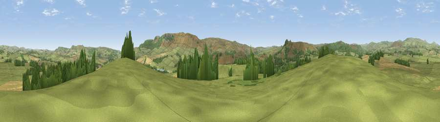

Viewpoint near Hepple
#16231 in England · top 49% of its area beats it · near HeppleWhere it is
The exact computed spot (NT 98175 02175). Click the marker for map links.
The view, rendered

A 360° render of this exact spot computed from the terrain model, tree cover and land cover — summer colours, afternoon light, calibrated against photographs of famous viewpoints. Real trees, hedges and buildings will differ in detail.
The panorama
Grey silhouette: terrain skyline in each direction (720 bearings, Earth curvature and refraction included). Dashed green: skyline with trees (+15 m) and buildings (+8 m) as obstacles. Blue strip: how far the ground is visible on each bearing.
Where the view opens
Wedge length = distance to the farthest visible ground on that bearing (vegetation-aware). Rings at 10, 25 and 50 km.
What fills the view
74% grassland · 14% cropland · 12% woodland
Angular shares of the visible panorama (visual magnitude), not map area. Landscape diversity 0.33 (0–1 Shannon).
Key numbers
More beautiful places nearby
The staircase of upgrades: each row has a higher view potential than everything closer. Driving times are estimates from straight-line distance, calibrated against real road routing — check an actual route before setting out.
| Place | Direction | Drive | Score |
|---|---|---|---|
| Viewpoint near Hepple | WSW · 3 km | ~8 min | 60.9 |
| Dues Hill | SW · 3 km | ~8 min | 68.2 |
| Viewpoint near Hepple | SE · 4 km | ~10 min | 82.4 |
| Viewpoint c12273_7856 | NNW · 13 km | ~23 min | 83.7 |
| Viewpoint c12396_7887 | NNW · 18 km | ~31 min | 85.7 |
| Viewpoint near Chillingham | NNE · 25 km | ~41 min | 88.1 |
| Long Side | SW · 104 km | ~128 min | 89.5 |
| Viewpoint near Easington | SE · 112 km | ~136 min | 90.2 |
55.31365, -2.03030 · source: screening · position refined by local search. Computed location — check access rights before visiting.